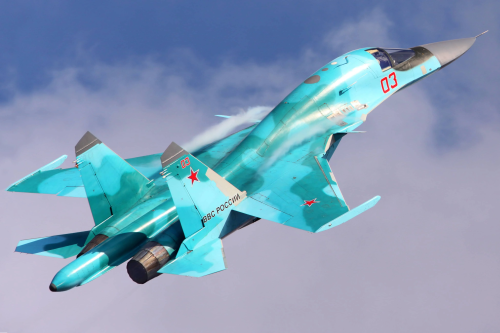
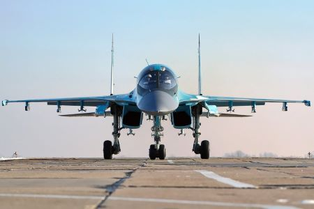
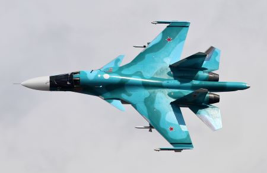

«Адская утка» - основа ударной мощи российской фронтовой авиации
«Эта машина - основная рабочая лошадь, у них по четыре, по пять вылетов каждый день, поэтому надо поджаться, поторопиться. У нас же есть предприятия, которые в этом году на программу 2024 года, они с опережением идут. Так и здесь надо организовать работу», - подчеркнул Сергей Шойгу.
Характеристики самолета
Су-34 (изделие Т-10В; по кодификации НАТО: Fullback «защитник») — советский и российский многофункциональный фронтовой сверхзвуковой истребитель-бомбардировщик, предназначенный для нанесения ударов авиационными средствами поражения по целям противника в оперативной и тактической глубине с сосредоточением основных усилий на удалении 150—600 км от линии боевого соприкосновения в условиях сильного противодействия средствами противовоздушной обороны противника и применения современных средств радиоэлектронной борьбы, а также поражения воздушных целей противника днём и ночью в простых и сложных метеорологических условиях.
- Максимальная масса боевой нагрузки: 8000 кг
- Максимальная скорость: 1900 км/ч
- Практическая дальность: 4500 км
Что говорят о самолете
О Су-34 тоже пишут как о фронтовом бомбардировщике, и в этой роли он вполне может использоваться, однако стоит вспомнить, что его прототип на этапе разработки назывался Су-27ИБ. ИБ — значит «истребитель-бомбардировщик». Таким образом, наш ударный флагман — это конструктивное развитие истребителя Су-27, а тот был создан в 1970-е годы в ответ на появление американского истребителя McDonnel Douglas F-15 Eagle. Кстати, на базе F-15 построили истребитель-бомбардировщик, или, как называют его в США, многоцелевой ударный самолет F-15E Strike Eagle («Ударный орел»), который, очевидно, и стоит считать ближайшим американским аналогом нашего Су-34.